DATA 310: Applied Machine Learning
Course ID: DATA 310
Course Attribute: None
Title: Applied Machine Learning
Credit Hours: 3
Meeting Times: 10:10 to 12:00 MTWTh
Location: Remote Synchronous Off-Campus
Date Range: Summer II Semester 2021
Course Description
This course will focus on the technical application of machine learning algorithms, their nature, and discussions regarding the potential drawbacks and advantages of different classes of algorithms. Students entering into this course should have, at a minimum, a background in python and linear algebra. No single algorithm will be covered in great depth, and the course will place a focus on the code and implementation choices necessary for each class of algorithm. Topics covered will include data processing, regression in ML, decision trees, forests, k-nn, support vector machines, kernel SVM, k-means and hierarchical clustering, association rules, natural language processing, neural networks, and various associated approaches. Pre-requisite(s): (DATA 141 OR DATA 140 OR CSCI 140 OR CSCI 141) AND (DATA 146 OR CSCI 146)
Goals and Objectives:
- To provide students with a critical understanding of the variety of tools that can be used for machine learning.
- To develop students ability to communicate findings, analysis, and visualization skills for future courses (and jobs).
- To expose students to real-world problems that are being engaged with by contemporary problem solvers and decision makers.
Honor Code
Among our most significant traditions is the student-administered honor system. The Honor Code is an enduring tradition with a documented history that originates as far back as 1736. The essence of our honor system is individual responsibility. Today, students, such as yourself, administer the Honor pledge to each incoming student while also serving to educate faculty and administration on the relevance of the Code and its application to students’ lives.
The Pledge
“As a member of the William and Mary community, I pledge on my honor not to lie, cheat, or steal, either in my academic or personal life. I understand that such acts violate the Honor Code and undermine the community of trust, of which we are all stewards.”
Accessibility, Attendance & Universal Learning
William & Mary accommodates students with disabilities in accordance with federal laws and university policy. Any student who feels s/he may need accommodation based on the impact of a learning, psychiatric, physical, or chronic health diagnosis should contact Student Accessibility Services staff at 757-221-2509 or at sas@wm.edu to determine if accommodations are warranted and to obtain an official letter of accommodation. For more information, please see www.wm.edu/sas.
I am committed to the principle of universal learning. This means that our classroom, our virtual spaces, our practices, and our interactions be as inclusive as possible. Mutual respect, civility, and the ability to listen and observe others carefully are crucial to universal learning. Active, thoughtful, and respectful participation in all aspects of the course will make our time together as productive and engaging as possible.
Grade Categories
| exceptional A = 100 ≥ 97.0 | excellent A = 96.9 ≥ 93.0 | superior A- = 92.9 ≥ 90.0 |
| very good B+ = 89.9 ≥ 87.0 | good B = 86.9 ≥ 83.0 | above average B- = 82.9 ≥ 80.0 |
| normal C+ = 79.9 ≥ 77.0 | average C = 76.9 ≥ 73.0 | sub par C- = 72.9 ≥ 70.0 |
| below average D+ = 69.9 ≥ 67.0 | poor D = 66.9 ≥ 63.0 | very poor D- = 62.9 ≥ 60.0 |
| failing F < 60.0 |
note .9 = .9 with bar notation
Grading Opportunities
| Exercises | 40% | 4 modules |
| Projects | 40% | 4 projects |
| Final Project | 20% | due by 5PM on the last day of finals |
Semester Schedule
Week 1 (July 5)
-
Tuesday:
- 10:10 to 11:00 - Getting Started
- 11:00 to 11:30 - Small groups
- 11:30 to 12:00 - Reconvene
-
Wednesday:
- 10:10 to 11:00 - Exercise
- 11:00 to 11:30 - Small groups
- 11:30 - Close early
-
Thursday:
- 10:10 to 11:00 - Exercise
- 11:00 to 11:30 - Small groups
- 11:30 to 12:00 - Reconvene
-
Saturday:
- Informal Responses due by 5PM
-
Sunday:
- Project 1 due by 5PM
Week 2 (July 12)
-
Monday:
- 10:10 to 11:00 - Exercise
- 11:00 to 11:30 - Small groups
- 11:30 to 12:00 - Reconvene
-
Tuesday:
- 10:10 to 11:00 - Exercise
- 11:00 to 11:30 - Small groups
- 11:30 to 12:00 - Reconvene
-
Wednesday:
- 10:10 to 11:00 - Exercise
- 11:00 to 11:30 - Small groups
- 11:30 to 12:00 - Reconvene
-
Thursday:
- 10:10 to 11:00 - Exercise
- 11:00 to 11:30 - Small groups
- 11:30 to 12:00 - Reconvene
-
Saturday:
- Informal Responses due by 5PM
-
Sunday:
- Project 2 due by 5PM
Week 3 (July 19)
-
Monday:
- 10:10 to 11:00 - Exercise
- 11:00 to 11:30 - Small groups
- 11:30 to 12:00 - Reconvene
-
Tuesday:
- 10:10 to 11:00 - Exercise
- 11:00 to 11:30 - Small groups
- 11:30 to 12:00 - Reconvene
-
Wednesday:
- 10:10 to 11:00 - Exercise
- 11:00 to 11:30 - Small groups
- 11:30 to 12:00 - Reconvene
-
Thursday:
- 10:10 to 11:00 - Exercise
- 11:00 to 11:30 - Small groups
- 11:30 to 12:00 - Reconvene
-
Saturday:
- Informal Responses due by 5PM
-
Sunday:
- Project 3 due by 5PM
Week 4 (July 26)
-
Monday:
- 10:10 to 11:00 - Exercise
- 11:00 to 11:30 - Small groups
- 11:30 to 12:00 - Reconvene
-
Tuesday:
- 10:10 to 11:00 - Exercise
- 11:00 to 11:30 - Small groups
- 11:30 to 12:00 - Reconvene
-
Wednesday:
- 10:10 to 11:00 - Exercise
- 11:00 to 11:30 - Small groups
- 11:30 to 12:00 - Reconvene
-
Thursday:
- 10:10 to 11:00 - Exercise
- 11:00 to 11:30 - Small groups
- 11:30 to 12:00 - Reconvene
-
Saturday:
- Informal Responses due by 5PM
-
Sunday:
- Project 4 due by 5PM
Week 5 (August 2)
-
Monday:
- 10:10 to 11:00 - Exercise
- 11:00 to 11:30 - Small groups
- 11:30 to 12:00 - Reconvene
-
Tuesday:
- 10:10 to 11:00 - Exercise
- 11:00 to 11:30 - Small groups
- 11:30 to 12:00 - Reconvene
-
Wednesday:
- 10:10 to 11:00 - Exercise
- 11:00 to 11:30 - Small groups
- 11:30 to 12:00 - Reconvene
-
Thursday:
- 10:10 to 11:00 - Exercise
- 11:00 to 11:30 - Small groups
- 11:30 to 12:00 - Reconvene
-
Saturday:
- Informal Responses due by 5PM
-
Sunday:
- Final Project due by 5PM
Module 1
Tuesday
- Download and install python 3.9.6
The simplest way to install the latest version of python is by going to their website, python.org and downloading the most recent version. After arriving at the main python.org landing page you should find a tab linking to the download for Python 3.9.6. Once there, download and install the latest version of python for your Mac or Windows system. - Download and install PyCharm Professional Version
In this class we will use the integrated developer's environment (IDE), which goes by the name of PyCharm. Go to the jetbrains.org website and download the Professional version for your Mac or Windows system. After installing PyCharm, launch it from your applications folder. You can use the evaluate for free button for now, until you obtain your JetBrains educational license. - Set the python interpreter
After launching PyCharm, select new project, and give your project a name (perhaps DATA310), and for the python interpreter, select previously configured interpreter and choose the...tab to the right of the interpreter drop down menu. This tab will bring you to a new window, where you will want to select the system interpreter option on the left option bar. Hopefully the option for python3.9 already appears in the interpreter drop down menu. If not, you will likely need to select the...tab to the right again, and manually select the python3.9 interpreter from within your file system. On a Mac the path to the version of python you installed in step 1 is likely/usr/local/bin/python3.9. Once your python 3.9.6 interpreter has been selected, then click on the OK button in the bottom right hand corner.
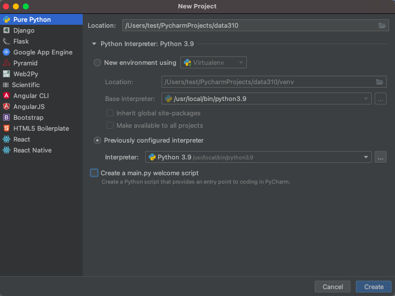 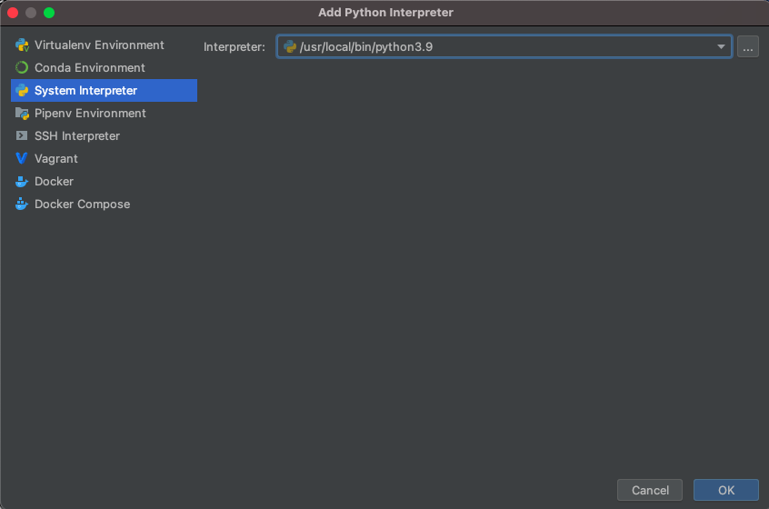 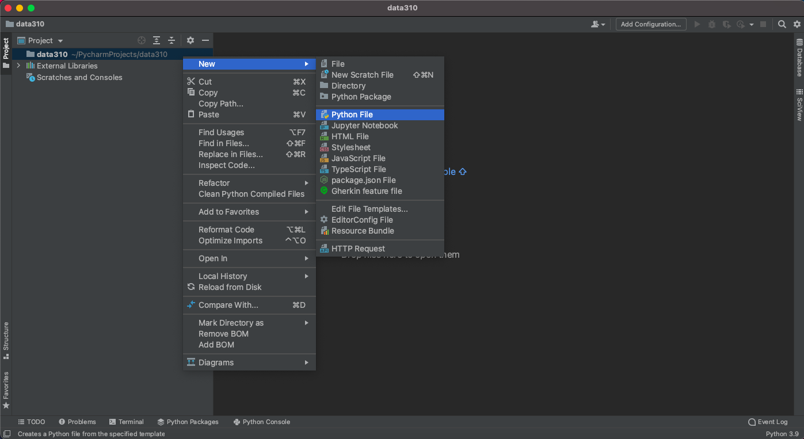
- Confirm your python session After creating a new script, click on the python console at the bottom of the screen and confirm your environment is using python 3.9.6. In your new script, add a line where you send a command to the interpreter.
2 + 2
The easiest way to execute the line of code is to make sure the cursor os on that line and then use the alt-shift-E combination in order to send the command to the interpreter for a result. Alternatively, you can option click (right click or two finger click) on the line and select the execute line in python console option.
If python returns the correct answer, then it appears you have properly configured your environment.
- Install a new package
Your PyCharm IDE includes a package manager that makes package installation and updating fairly simple. To install a new package click on the preferences tab under your PyCharm pull down menu and then select the Project tab. Under the project tab you should see a subtab called Python Interpreter and off to the right, two packages that have already been installed. First, make sure both of these packages (should be pip and setuptools) have the most up to date version installed, and if not, use the up arrow symbol to upgrade each package to its latest version. Next select the + button to install a new package. Type tensorflow in the search window and then select install package. It might take a minute or two for the tensorflow package to complete its installation process. You can monitor your IDE's progress at the bottom while waiting for tensorflow to be installed successfully. After returning to main window of your package manager, you should notice a number of additional dependent packages that were installed in support of tensorflow. Close the system preferences window and add a new line to your script
import tensorflow. Again, your IDE may take a minute or two in order to execute the command for the first time, but once complete, you should see the>>>indication that your interpreter is ready to execute a command. If you click on the progress bar, it is possible to review the background tasks that involve updating the interpreter.
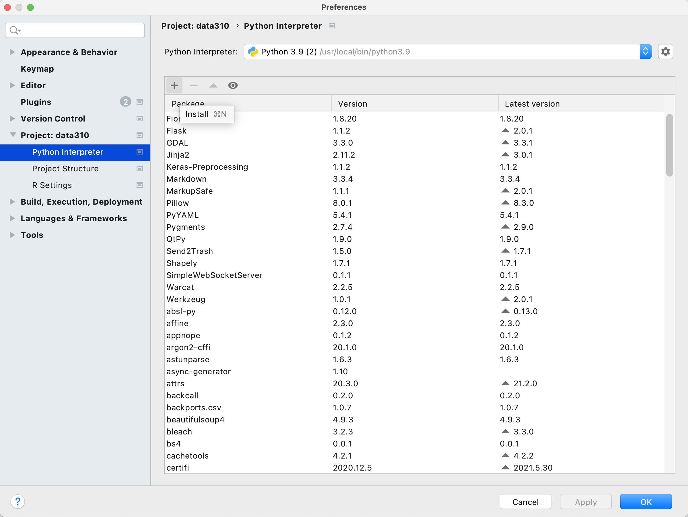
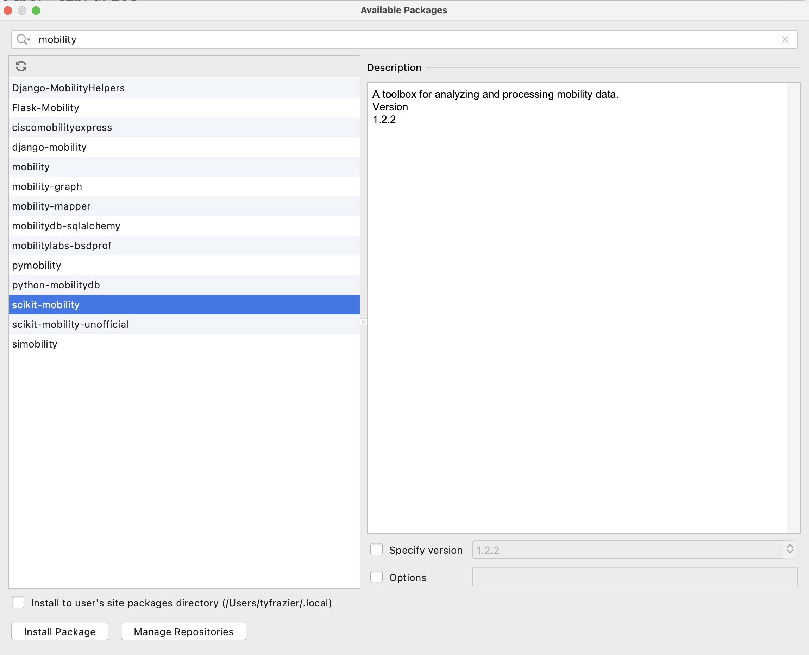
After the system finishes add a few lines to your script and confirm the output.
# TensorFlow and tf.keras
import tensorflow as tf
# Helper libraries
import numpy as np
import matplotlib.pyplot as plt
print(tf.__version__)
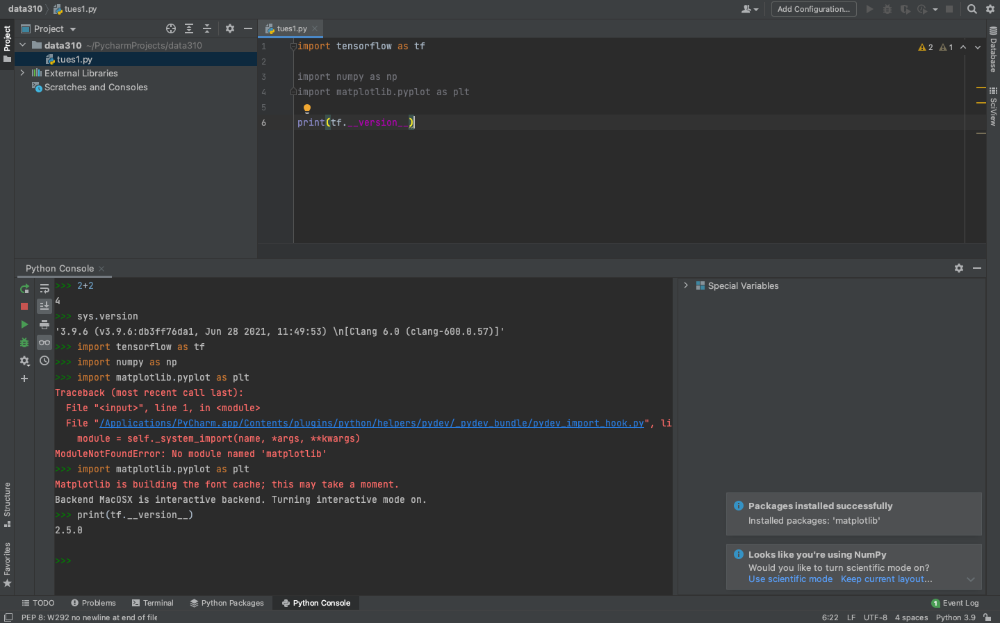
- Next go to the JetBrains webpage and register for an educational license. After receiving your license, return to the Welcome to PyCharm page and click on the gear symbol in the bottom left hand corner, where you will find the option to manage licenses. Enter your license to register your Professional version of PyCharm.
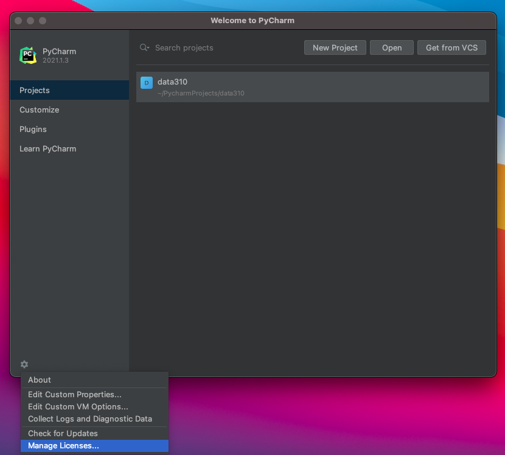
-
Next install the JetBrains IDE WebStorm for interacting with your GitHub account. Webstorm is a good IDE for producing markdown files for publishing in your public facing GitHub pages site.
-
Next, if you don't already have one, create a GitHub account. Once you have a GitHub account, create a new repository. Perhaps call it data310. Each repository needs to have a
README.mdfile in its root directory. Be sure to create one, which you can use as the index for your repository of formal and informal assignments. -
Go to the settings tab in your repository and click on the pages tab in the left hand pane. Set the branch to main, save your GitHub pages and then note where your site has been published. Click on the link and reload it, until it appears. Sometimes this can take a minute or two.
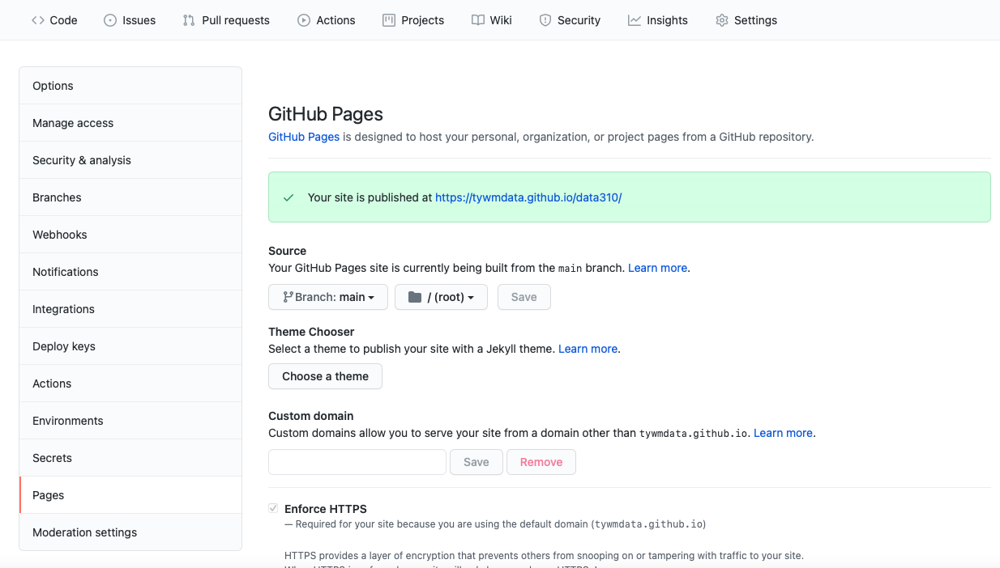
- In the main page of your repository open the code tab and copy the HTTPS address that you will use to link your repository to WebStorm via version control. Go back to the Welcome to Webstorm page and select the Get from VCS tab. Paste your HTTPS address into the URL field in order to clone your GitHub pages repository.
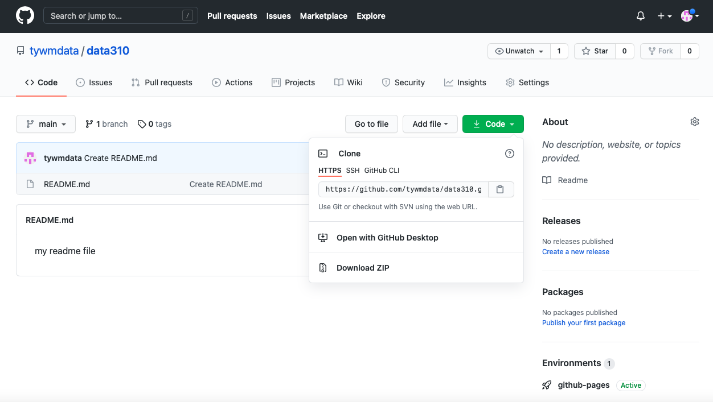
- Once you have cloned the repository from your GitHub account, you have a local project that can be modified and then those changes can be pushed to the GitHub repo for publishing via GitHub Pages (which happens automatically through something called the Jekyll engine). Go ahead and modify your
README.mdfile by setting it up as the index for your informal and formal assignments. Perhaps your index looks something like the following. Note how I created thewwek1.mdfile and linked it in the index.
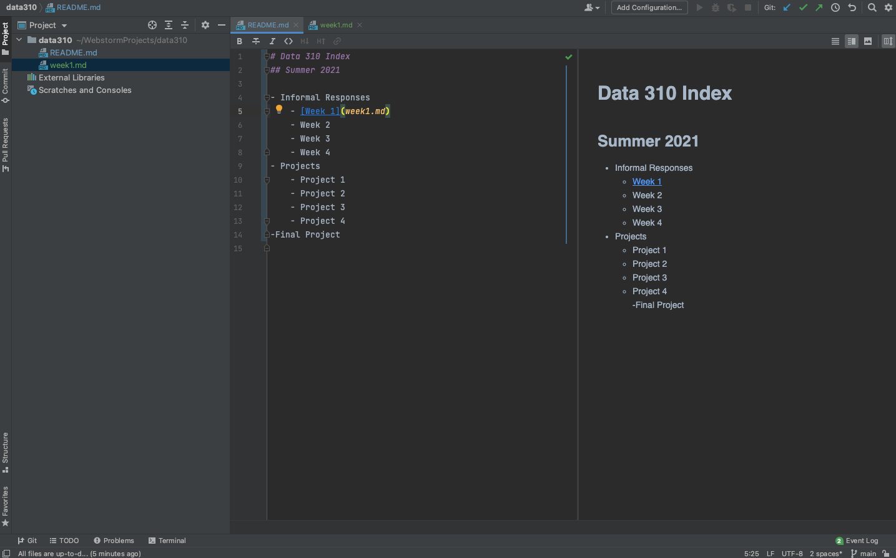
Markdown is fairly simple to learn. Here is a guide.
Now push those changes to your repository by selecting the commit tab on the left hand side, highlighting all the falls you have changed to commit, add a commit message , and then select the commit and push tab. You may need to add your user name, e-mail and authorize your account. Now go back to your GitHub pages webaddress and notice that the changes have taken place.
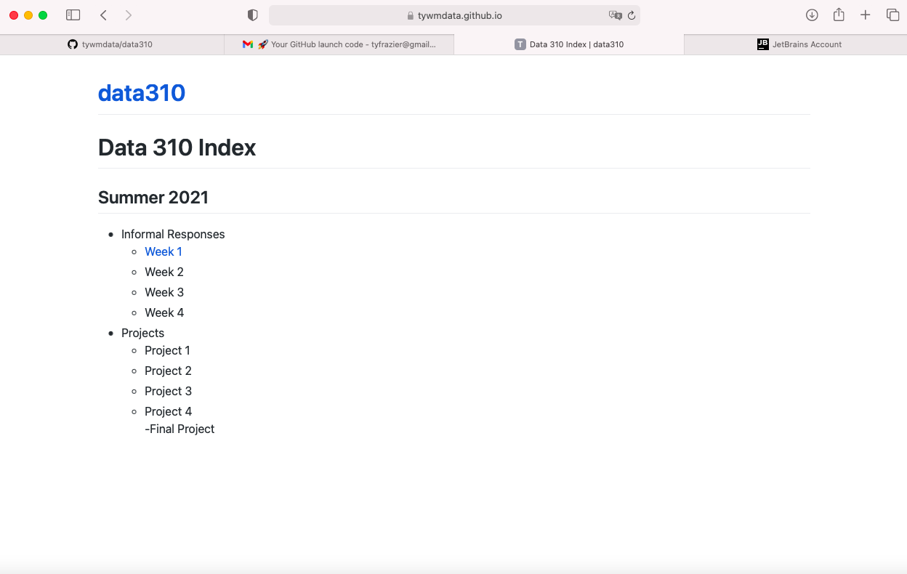
- Finally, go back to PyCharm and create a new python script. Go to the tensorflow webpage at https://www.tensorflow.org/tutorials/keras/classification, read and reproduce the script in PyCharm and run it. Answer the following questions about the dataset.
- What is the shape of the images training set (how many and the dimension of each)?
- What is the length of the labels training set?
- What is the shape of the images test set?
Be prepared to discuss during tomorrow's class.
Wednesday
Start with the Basic classification: Classify images of clothing script that you prepared for today's class. Execute the following.
- From the Preprocess the data section of the script, modify the training image to produce three new images.
- Under the Make predictions section, present the array of predictions for an image from the test set other than the one given in the example script. What does this array represent? How were the
Softmax()andargmax()functions applied? Read this post from DeepAI, What is the Softmax function for a description of the two functions (focus on the softmax formula, calculating softmax and the softmax vs. argmax sections). Does the output fromnp.argmax()match the label from yourtest_labelsdataset? - Under the Verify predictions section, plot two additional images (other than either of the two given in the example script) and include the graph of their predicted label as well as the image itself.
- Under the Use the trained model section, again select a new image from the test dataset. Produce the predictions for this newly selected image. Does the predicted value match the test label? Although you applied the
argmax()function in this second instance, you did not useSoftmax()a second time. Why is that so (please be specific)?
Copy the script you produced for the Fashion MNIST dataset. Modify the script as follows and produce the following output.
- Change the line
fashion_mnist = tf.keras.datasets.fashion_mnist
to
mnist = tf.keras.datasets.mnist
in order to switch the dataset from sets of clothing to hand written numbers. Produce a plot of 25 handwritten numbers from the data with their labels indicated below each image. Fit the model and report the accuracy of the training dataset. Likewise report the accuracy of the test dataset. As in the above example, from the Verify predictions section, plot two images and include the graph of their predicted label as well as the image itself.
- Evaluate how your model for the MNIST dataset compared with your model of the Fashion_MNIST dataset. Which of the two models is more accurate? Why do you think this is so?
For Thursday's class, reproduce the script on Basic Text Classification. Please read through the script and confirm you are able to execute a basic inferential sentiment analysis.
Thursday
At the bottom of the Basic Text Classification exercise you prepared for today's class is a second similarly structured exercise. With two of your classmates, complete the multi-class classification on Stack Overflow questions exercise.
- Provide plots that describe the training and validation loss and accuracy. Interpret the plots. How is this model performing?
- Export the model and print the accuracy produced using the test data. Does the test data accuracy serve to validate your model?
- Produce three examples that are relevant to the multi-class classification model and predicting the language relevant to the stack overflow question. Produce the array generated by each of your three examples. Were these predictions accurate?
- Compare your multi-class model with your binary class model that predicted sentiment as either positive or negative in response to various movie reviews. What is the most significant difference between the two different types of models? Compare the two models and estimate which demonstrated better performance? Substantiate your response.
Project 1
Collect data from zillow to train a model that predicts home price.
- For reference watch What is ML by Laurence Maroney, beginning at about minute 8 with the subsequent housing price exercise presented at the end of the video. You are also welcome to refer to the beginning part of the second video in this series First steps in computer vision, where the solution to the example housing price exercise is presented.
- Got to the Apify zillow scraper and scrape a few hundred home sale listings from any city. Download the file as a
.csv.
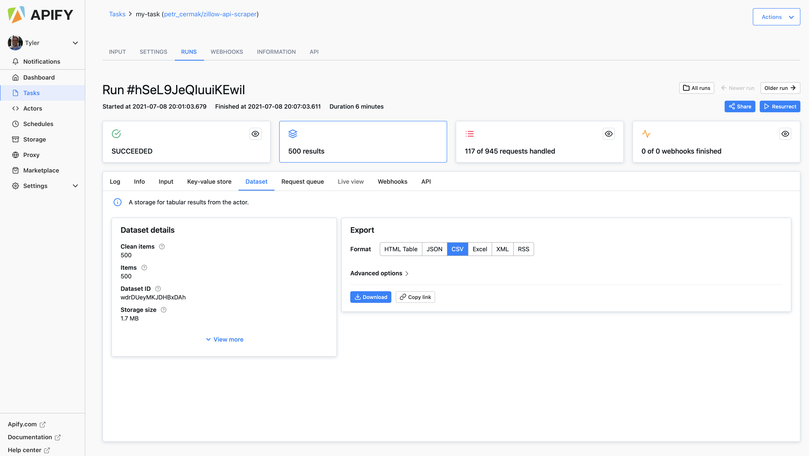
-
Use the pandas
read_csv()function to import your file to your PyCharm session. Create a data frame that has the following variables.- price
- bedrooms
- bathrooms
- livingArea
-
Check if your data frame has any NaN values and drop them in place as needed.
-
As in the above referenced example, scale the living area and price values. Check the shape of your input data in preparation for specifying your model.
-
Pipe the data to your model as follows.
model = tf.keras.Sequential([keras.layers.Dense(units=1, input_shape=[3])])
model.compile(optimizer='sgd', loss='mean_squared_error')
history = model.fit(X, y, epochs=100)
-
Use
model.predict()to predict the price of each home using the input variables -
Inverse transform these values (the opposite of where you scaled the price above) and add them as a new column in your data frame.
-
Use the following to plot model loss.
plt.plot(history.history['loss'], label='loss')
plt.ylim([add, add])
plt.xlim([add, add])
plt.xlabel('Epoch')
plt.ylabel('loss')
plt.legend()
plt.grid(True)
plt.show()
- Use the following to plot the asking price and predicted price for all of the homes in your selected city
plt.scatter(your_dataframe['add_variable'], your_dataframe['add_variable'])
plt.xlim([add, add])
plt.ylim([add, add])
plt.axline([0, 0], [1, 1])
plt.xlabel('add_label')
plt.ylabel('add_label')
plt.legend()
plt.show()
- Produce the MSE for your model using the following.
mse = np.mean((y - y_pred) ** 2)
mse
-
Answer the following questions.
- How did your model fare?
- In your estimation is there a particular variable that may improve model performance?
- Which of the predictions were the most accurate? In which percentile do these most accurate predictions reside? Did your model trend towards over or under predicting home values?
- Which feature appears to be the most significant predictor?
Module 2
Monday
Start with the Regression script that we prepared during today's class. Replace the Auto MPG dataset provided in the tensorflow exercise with the Auto Imports dataset provided in the UCI Machine Learning Repository. Specify a model with the following target and features.
- highway-mpg (continuous)
- num-of-cylinders (categorical)
- engine-size (continuous)
- horsepower (continuous)
- curb-weight (continuous)
Specify and train both a multi-class linear regression and a multi-class DNN regression. Which of the two models produces a better loss metric (see this link for an explanation of the loss function). Produce a plot that supports your answer. Return to the remainder of the variables from the dataset and add additional continuous and categorical features with the intent of improving your loss metric. Produce a plot that demonstrates the value of your model. What is the best model your team was able to produce?
For tomorrow, read and produce the script on Overfit and underfit in preparation for class.
Tuesday
Using the script you produced with the Higgs Dataset answer the following questions.
- Describe the dataset. What type of variable is the target? How many features are being used? How many observations are in the training dataset? How many are used in the validation set?
- How did each of the four models perform (tiny, small, medium and large)? Which of the four models performed the best? Which ones performed the worst? Why in your estimation did certain models perform better? Produce a plot that illustrates and compares all four models.
- Apply regularization, then add a drop out layer and finally combine both regularization with a dropout layer. Produce a plot that illustrates and compares all four models. Why in your estimation did certain models perform better?
- What is an overfit model? Why is it important to address it? What are four different ways we have addressed an overfit model thus far?
For next class, we will be shifting gears back to image processing and then on to computer vision with convolutional neural networks. Please complete the script Load and preprocess images and then also watch the Convolutions and pooling video by Laurence Maroney of Google Developers. After watching the video answer the following questions.
- In this exercise you manually applied a 3x3 array as a filter to an image of two people ascending an outdoor staircase. Modify the existing filter and if needed the associated weight in order to apply your new filters to the image 3 times. Plot each result, upload them to your response, and describe how each filter transformed the existing image as it convolved through the original array and reduced the object size. What are you functionally accomplishing as you apply the filter to your original array? Why is the application of a convolving filter to an image useful for computer vision? Stretch goal: instead of using the misc.ascent() image from scipy, can you apply three filters and weights to your own selected image? Describe your results.
- Another useful method is pooling. Apply a 2x2 filter to one of your convolved images, and plot the result. In effect what have you accomplished by applying this filter? Does there seem to be a logic (i.e. maximizing, averaging or minimizing values?) associated with the pooling filter provided in the example exercise (convolutions & pooling)? Did the resulting image increase in size or decrease? Why would this method be useful? Stretch goal: again, instead of using misc.ascent(), apply the pooling filter to one of your transformed images.
Finally, review the following images from class and then convolve the 3x3 filter over the 9x9 matrix and provide the resulting matrix. link to matrices

{kind=link}
Thursday
For today's class you loaded and preprocessed the tf.dataset the tf_flowers, and then trained a CNN in order to predict whether a particular image was of one of five different types of flowers. For the first part of this exercise, instead of using the tf.keras.utils.get_file() to load your data, use tfds.load() to load a tensorflow dataset as illustrated in the section Using TensorFlow Datasets. Using the relevant parts from the entirety of the example script as a guide, fit a CNN model to your training data and validate using the beans dataset from Tensorflow datasets and then again train and validate using the eurosat dataset. Present your results and discuss the accuracy of each of model.
Additionally, go to the image augmentation exercise and read through and become familiar with the many individual examples presented. Towards the end of this exercise is the Apply augmentation to a dataset example, that illustrates a resize and rescale image augmentation implementation to the tf_flowers dataset. Apply this same method to both the beans and eurosat datasets. Did your model performance improve? How many epochs were you able to run and how much time did it take? Present your results and discuss the accuracy of your augmented output for tomorrow's class.
Module 3
Monday
Start with the Load CSV data script that we prepared during today's class. Following the Mixed data types section from the exercise, replace the titanic dataset first with the Metro Interstate Traffic Volume Data Set and then with the Iris Dataset. You can use the read_csv() command from the pandas package to pull these datasets from the following web addresses.
- https://archive.ics.uci.edu/ml/machine-learning-databases/00492/Metro_Interstate_Traffic_Volume.csv.gz
- https://storage.googleapis.com/download.tensorflow.org/data/iris_training.csv
Use the plot_model() command from tf.keras.utils to produce the plot that describes the input preprocessing step. Describe the plot of each model for the two dataset preprocessing steps. What does each box in the illustration represent? Are there different paths towards the final concatenation step? What is occurring at each step and why is it necessary to execute before fitting your model. Train each model and produce the output (not necessary to validate or test). Describe the model output from both the metro traffic interstate dataset and the iris flowers dataset. What is the target for each dataset? How would you assess the accuracy of each model? Are you using a different metric for each one? Why is this so? What is each one measuring?
For tomorrow, read and produce the script on Custom training: walkthrough in preparation for class.
Tuesday
Module 4
Final Project
Links to Responses
- Huatao Chen
- Michael Cusack-Nelkin
- Lydia Danas
- Liz Goodwin
- Dylan Hartman
- Cori Ingram
- Maggie Kettelberger
- Alexandra MacNamara
- Aashni Manroa
- Thomas Miller
- Alaa Mokbel
- Ethan Nelson
- David Olsen
- Annabel Richter
- Gwen Wagner
- John Willis
- Tyler Yeatts
- Julia Lewis
Links to Responses
- Amy Hilla
- Emma Schmidt
- Natalie Larsen
- Alleah Thornhill
- Sarah Grace Lott
- Jacinta Das
- Margaret Delaney
- Austin Anderson
- Wayne Wu
- Andrew Evan
- Alejandro Eulacio
- Sean Frankel
- J.Mo Yang
- Jacob Atagi
- Antonio Marra
- Richard Bartlett
- Victoria Chang
- Conrad Ning
- Dominic Skeete
- Frank Qiu
- Pablo Solano
- Tommy Williams
- Suditi Shyamsunder
- Rachel Li
- Jeremy Swack
Links to Responses
- Alex Raposo
- Luke Denoncourt
- Caroline Wall
- Daniel Highland
- Maddy Mulder
- Roger Clanton
- Matthew Cheng
- Caroline Freshcorn
- Caitlin Bryant
- Maddie Sharpe
- Alex Huang
- John Hennin
- Devika Puri
- Annette Lopez Davila
- Kathryn Johnson
- Jennifer Lam
- Anthony J. Ventura
- Paul Brenkus
- Sarena Oberoi
- Lily Bartholomaus
- Darrin Lilly
- David Huang
- Tommy Williams
- Youjin Lee
- Chai Hibbert